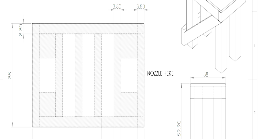
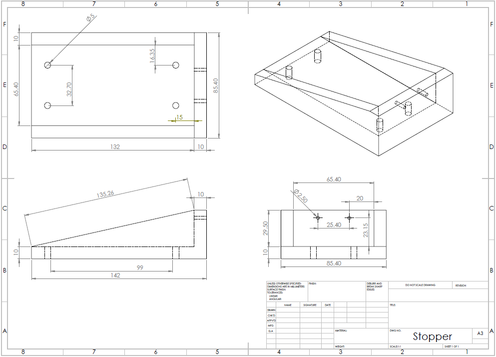

Stopper
Usama Tariq
The stopper is one of the most crucial part of any static test, hence the name ‘static’. The purpose of the stopper was to, obviously, stop any acceleration of the rocket while also measuring the thrust via a load cell which would be attached to it. When designing such a component many factors needed to be considered, some of which were the material of the stopper, expected thrust from the test, position of the load cell on the stopper and the location/size of the screws needed.
Underneath the test stand there are six locations where the stopper could be bolted down as shown by the shaded 3.8’’ rectangles running down. These wooden beams increase the depth of the table and give a stronger connection between the table and stopper. Therefore the stopper had to be that required length to fit at least two beams.
The first design was to take a steel cuboid, which would be long enough and cut it diagonally. The length of the piece would allow for two screws to be bolted down into two adjacent beams. This design was quite simple but it was quickly realized that it was not feasible due to a few different reasons. First of all, finding a steel block that was the necessary size was not possible. It was either not readily available or very expensive. The second issue was milling the holes that would fasten the stopper to the table. Since the piece would be slanted, machining vertically would be challenging. Even if the holes had been milled, the screw would not rest evenly on a slanted incline; this could decrease the stability and cause unnecessary stresses that might lead to failure. The same issue would arise when milling the holes to attach the load cell.
The second design was the almost the same concept except it would be hollow in the center as shown in Figure 2. The overall length would be shorter because obtaining a longer piece was not possible as was with the first design. The trade-off of having a shorter stopper meant that the back screws would not be mounted to the thick wooden beams, rather they would just penetrate a smaller thickness. This second design would work, but it would be harder to machine.
However a scrap steel L-beam was found in the machine shop, that while some machining had to be done to make it usable, it would be comparatively less than the previous designs. Two 3mm holes were milled at the center to support the load cell and 3 half-inch holes were milled to attach the stopper to the table as shown below in Figure 3
This steel L-beam was still at a disadvantage because the length running across the table was too short. Therefore the use of only one wooden beam could be used. Two holes were milled near the edge where the stopper starts to curve upwards to prevent creating a moment. The hole at the back was milled for reinforcement.